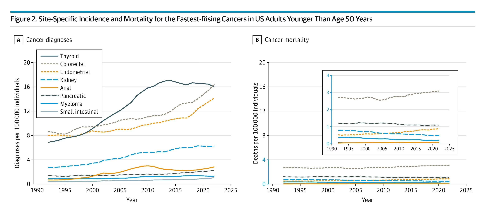

Risk factors for colon cancer (and other gastrointestinal cancers) in people under 50yo.

Early-onset cancer incidence doubled since 1992 but mortality is stable: overdiagnosis
Louis shares a JAMA Internal Medicine analysis finding that rising cancer rates in people under 50 largely reflect more diagnostic scrutiny, because deaths have not risen. Colon and endometrial cancers are exceptions, with small genuine increases in death rates of under 1 per 100,000.